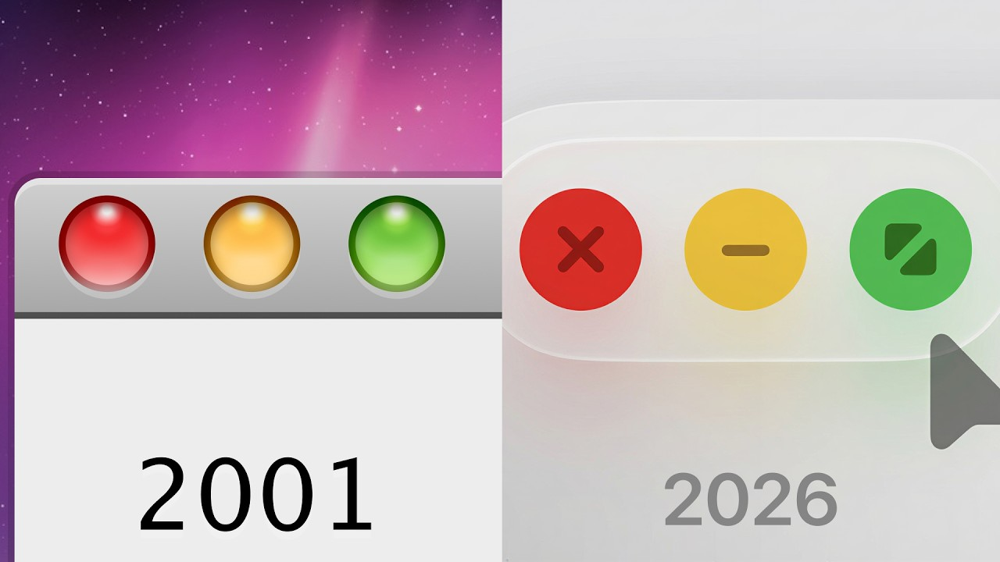

Decision
Whether to remove a long-lived visual cue for systemic consistency or preserve it as part of product continuity.
Specimen decision record
A public investigation reformatted as the accountable object a private decision stress-test would return. It demonstrates structure and reasoning—not client impact.

01 / Brief
Whether to remove a long-lived visual cue for systemic consistency or preserve it as part of product continuity.
The public film’s historical and comparative record: Aqua, early criticism, Windows Luna and Metro, twenty-five years of redesign, and the move to iPadOS.
Neutralise or remove the distinctive coloured controls to make the interface more formally consistent.
Retain the identity-bearing cue while simplifying mechanics that no longer serve the product.
02 / Evidence map
The investigation traces the coloured controls from Aqua through repeated redesigns and changing interface languages.
Competing systems—including Luna and Metro—made different choices while Apple repeatedly protected the cue.
Long continuity can indicate that a visually minor detail carries recognition and product identity beyond its original mechanics.
Persistence alone does not prove user value. This specimen contains no behavioural study, client constraints, implementation cost, or observed outcome.
03 / Alternatives under stress
Alternative A · reject
Alternative B · support
04 / Supported position
The available historical evidence supports retaining the identity-bearing cue while modernising mechanics around it. It does not establish that every inherited detail is valuable.
05 / Traceability
| ID | Input | Interpretation | Decision use |
|---|---|---|---|
| E–01 | Repeated continuity across redesigns | The cue may carry recognition beyond its mechanics | Raises the burden of proof for removal |
| E–02 | Competing systems changed differently | The protected cue is not an inevitable platform convention | Supports treating continuity as a deliberate product choice |
| U–01 | No behavioural evidence | Historical persistence cannot establish usability value | Limits confidence and defines the next test |
06 / Proof boundary